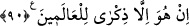
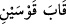

90. İşte o peygamberler Allah’ın hidayet ettiği kimselerdir. Sen de onların yoluna
uy. De ki: Ben buna (peygamberlik görevime) karşılık sizden bir ücret istemiyorum.
Bu (Kur’an) âlemler için ancak bir öğüttür.
“İşte onlar”, daha önce zikri geçen peygamberler “Allah’ın hidayet ettiği
kimselerdir.” Allah onları hakikate erdirmiş ve doğru yola ulaştırmıştır. “Sen de
onların yoluna uy.” Yani sadece onların yoluna uy. Başkalarının yoluna değil. “Onların
yolu”ndan maksat, Allah Teâlâ’ya îman, onu birlemek ve dînin temel esaslarında takip
ettikleri yoldur. Yoksa neshi kâbil olan şeriatler değildir. Çünkü artık “nesh” den sonra
onların hidayet olmaları, yol göstermeleri söz konusu değildir.
İslâm âlimleri bu âyeti, Rasûlullah (s.a.)’in bütün peygamberlerden faziletli olduğuna
delil getirmişlerdir. Çünkü, kemâl hasletleri ve şeref sıfatları diğer peygamberlerde
dağınık olarak mevcuttu.
Davud ve Süleyman (aleyhime’s-selam), nimetlere şükr etmekle temâyüz etmişlerdi.
Eyyûb (a.s.), belâlara sabretmekte öndeydi. Yûsuf (a.s.) ise hem şükrü hem de sabrı
kendisinde toplamıştı. Mûsâ (a.s.), muarızlarını kahr edici mûcizelerle donatılmıştı.
Zekeriyya, Yahya, İsâ ve İlyas (aleyhimü’s-selam) zühd sahibi peygamberlerdi. İsmâil
(a.s.) da, sıdk erbâbındandı. Böylece her peygamberde muayyen bir haslet öne çıkmış,
temâyüz etmişti. İşte Cenab-ı Hak bütün bu güzel hasletleri Habib-i Ekrem (a.s.)’da
toplamıştır. Çünkü o, kendinden önceki peygamberlerin yoluna uymakla emrolunduğu
için onların güzel huylarını edinmekte kusur etmedi.
Cihan güzellerine ne verildiyse
Sana ondan daha güzeli verildi
Dilberlerin nazlandıkları şeyden
Daha fazlası sende vardır
et-Tevilâtü’n-necmiyye’de şöyle denilmiştir: “İşte onlar Allah’ın” sıfatları ile zatına
“hidâyet ettiği kimselerdir. Sen de onların yoluna uy.” Çünkü o peygamberlerden her
biri başkalarının gitmediği bir yola girmişler, herbiri kendisine takdir olunan yere kadar
gitmişlerdir. Nitekim senin de (Mirac gecesinde görüp) bildirdiğin gibi: “Dünya
semasında Hz. Adem’i ikinci kat semada Yahya ve İsa (aleyhime’s-selam)’ı, üçüncü kat
semada Yûsuf (a.s.)’ı, dördüncü kat semada İdris (a.s.)’ı, beşinci kat semada Hârûn
(a.s.)’ı, altıncı kat semada Mûsâ (a.s.)’ı ve yedinci kat semada ise İbrahim (a.s.)’ı
gördün.” Sen onların yoluna uy da, tâ “Sidre-i Müntehâ” ya varana kadar yollarından
git. Orası ise mukarrebîn meleklerinin varabileceği en son noktadır. Sonra sen en
yüksek makama ve en yakın yere ulaştın. Öyle ki sen, benliğinden ayrıldın da O’na
öylece yaklaştın. “__WORD__” (iki yay arası kadar yakınlık) makamına vâsıl oldun. Ya da